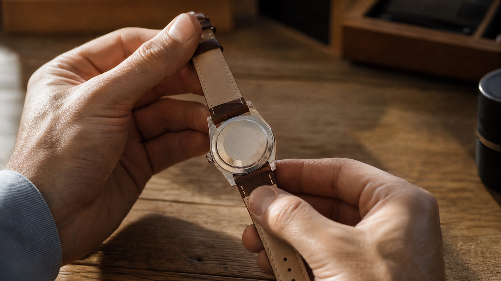

Большинство советов «что подарить парню» сводятся к трём вещам: носки, пенка для бритья и сертификат в магазин электроники. Работает это плохо — потому что парни читают подарок не по цене, а по смыслу. И вот какой смысл они ищут.
Если коротко — им важно не «что подарили», а «что вы этим сказали». Разберём, какие подарки что говорят и как не промахнуться.
Почему парни читают подарки иначе
Есть распространённый стереотип: парням всё равно, что им дарят. Это неправда. Просто они читают подарки по другой логике, чем женщины.
Психологи отмечают: мужчины чаще воспринимают подарок как сигнал о том, как их видят. Не «мне это нравится», а «меня видят таким». Если подарок попадает в это «таким» — он становится любимым. Если нет — лежит в шкафу.
Отсюда практический вывод. Прежде чем выбирать подарок парню, стоит ответить на один вопрос: каким я его вижу? Сильным, заботливым, умным, весёлым, надёжным? Ответ определит выбор.
Что символизируют разные подарки
Вот основные типы подарков и что они говорят парню — по символике, а не по цене.
Что-то для дела. Инструмент, гаджет, аксессуар для работы или хобби. Символика: «Я вижу, что ты умеешь. Я уважаю твоё дело». Работает почти всегда — если попадает в его сферу.
Что-то для силы. Спортивное, тактическое, для активного отдыха. Символика: «Я вижу тебя сильным». Подходит, если он действительно в теме. Если нет — читается как «я хочу тебя переделать».
Что-то для уюта. Плед, кружка, тёплый свитер, аромат для дома. Символика: «Я хочу, чтобы тебе было хорошо рядом со мной». Работает в близких отношениях.
Что-то личное. Вещь с гравировкой, с датой, с именем. Символика: «Ты — не случайный человек в моей жизни». Самый сильный подарок, если отношения серьёзные.
Что-то для впечатлений. Билеты, поездка, мастер-класс. Символика: «Я хочу провести с тобой время». Работает, если он ценит опыт больше вещей.
Что подарить парню: 7 идей с символикой
Собрал проверенные варианты — с объяснением, что каждый из них говорит.
1. Хороший нож для готовки или хобби. Если он готовит или увлекается чем-то руками — попадание в точку. Символика: «Я вижу твоё мастерство».
2. Кожаный ремень или кошелёк. Классика, которая не устаревает. Символика: «Я хочу, чтобы ты выглядел хорошо». Важно: выбирайте качество, а не бренд.
3. Хорошие наушники или колонка. Если он слушает музыку или играет. Символика: «Я знаю, что тебе это важно».
4. Умные часы или фитнес-браслет. Символика: «Я хочу, чтобы ты был здоров». Работает, если он уже заботится о себе.
5. Книга по его интересам. Не «бестселлер», а именно то, что заходит в его тему. Символика: «Я слушаю, о чём ты говоришь».
6. Подарок-впечатление. Полёт на вертолёте, мастер-класс по кузнечному делу, поездка. Символика: «Я хочу, чтобы у нас была общая история».
7. Что-то с гравировкой или датой. Брелок, кольцо, кружка, ремень с надписью. Символика: «Это только между нами».

Приметы: что не стоит дарить парню
Есть предметы, которые несут старую символику — и не всегда уместны в качестве подарка.
Нож. Уже разбирали: считается, что «разрезает» отношения. Если дарите — приложите монетку.
Часы. По примете — к разлуке или к «отсчёту времени». Если он не суеверен — можно. Если суеверен — выберите другое.
Галстук. В старой традиции — знак того, что вы хотите его «привязать». В современной — просто скучно. Работает только если он носит галстуки.
Носки. Это не подарок. Это покупка. Исключение — если это качественные, красивые носки от бренда, который он любит.
Что-то «исправляющее». Тренажёр для похудения, книга «как стать лучше», средство от храпа. Символика: «Я хочу тебя переделать». Не работает никогда.
Как вручить подарок парню
Парни часто не читают намёки. Поэтому важно не только выбрать, но и вручить.
Скажите, что это значит. Не «вот, держи», а «я выбрал это, потому что…». Одна фраза — и подарок становится посланием.
Не извиняйтесь за цену. «Знаю, что недорого, но…» — убивает весь смысл. Дешёвый, но осмысленный подарок работает лучше дорогого и безразличного.
Не ждите бурной реакции. Если он не прыгает от радости — это не значит, что не понравилось. Мужчины часто реагируют сдержанно, а потом долго пользуются подарком.
Дайте время. Если подарок для хобби — используйте вместе. Если книга — не заставляйте читать сразу. Дайте ему присвоить подарок самому.
Когда подарок — не вещь
Иногда лучший подарок парню — это не предмет, а действие.
Совместное время. Выходные вдвоём, без телефонов, без дел. Символика: «Ты важнее, чем мои задачи».
Свобода. День, когда он может делать что хочет. Символика: «Я не держу тебя».
Поддержка. Помочь с проектом, с ремонтом, с чем-то сложным. Символика: «Я на твоей стороне».
Что это значит. Парни ценят не вещи, а внимание. Но внимание — не в смысле «много», а в смысле «точное».
В итоге
Парню не нужен дорогой подарок. Ему нужен подарок, который говорит: «Я вижу тебя таким, какой ты есть. И мне это нравится».
И если задуматься — это и есть суть подарка. Не угадать вкус, а показать, что вы его знаете. Не потратить деньги, а вложить смысл.
Мой друг однажды получил от девушки простой брелок с гравировкой — дата их первой встречи. Он носит его четвёртый год. А дорогую куртку, которую ему дарили раньше, уже не помнит.
А что вы дарили парню, что действительно зашло? Поделитесь в комментариях — соберу копилку идей.